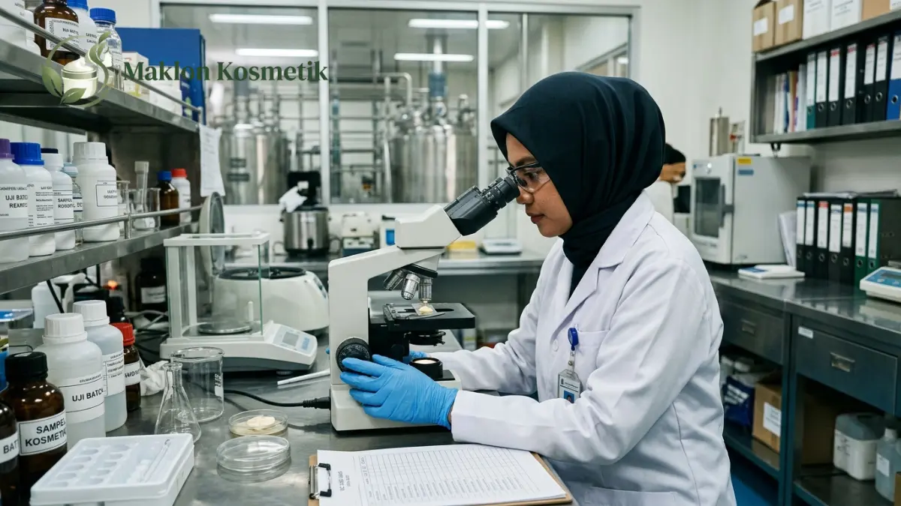

Fasilitas Pabrik CPKB Golongan A: Jaminan Kualitas Maklon Kosmetik

Daftar Isi Artikel Buka/Tutup
- Apa Itu CPKB dan Apa Arti Golongan A?
- Mengapa Sertifikat CPKB Golongan A Penting bagi Brand?
- Fasilitas Apa Saja yang Menjadi Ciri Pabrik CPKB Golongan A?
- Bagaimana Sistem Kontrol Mutu dan Ketertelusuran Batch Bekerja?
- Bagaimana Cara Memverifikasi Sertifikat CPKB Pabrik Maklon?
- Pertanyaan Sebelum Memilih Pabrik dan Batasan yang Perlu Dipahami
- Pertanyaan Umum (FAQ)
Ringkasan Poin Inti
- CPKB adalah pedoman mutu pembuatan kosmetik konsisten yang diawasi langsung oleh Badan POM Republik Indonesia.
- Pabrik Golongan A mengantongi kapabilitas produksi seluruh bentuk sediaan kosmetik dengan fasilitas terlengkap.
- Standar mutu mencakup tata ruang higienis, sistem tata udara HVAC berpenyaring, laboratorium terakreditasi, dan nomor batch telusur.
- Brand wajib memvalidasi keaslian sertifikat dan masa berlaku sebelum menyetujui kontrak kerja sama manufaktur.
Apa Itu CPKB dan Apa Arti Golongan A?
Fasilitas pabrik CPKB Golongan A merupakan parameter tertinggi jaminan mutu manufaktur kosmetik nasional. Standar Cara Pembuatan Kosmetika yang Baik memastikan setiap botol produk diproduksi secara konsisten, aman, dan higienis.
Regulasi industri kecantikan di Indonesia membagi pabrik manufaktur menjadi dua klasifikasi utama. Golongan A memiliki izin memproduksi semua bentuk sediaan kosmetik, mulai dari cairan, emulsi krim pekat, serbuk, gel, hingga sediaan aerosol bertekanan.
Sebaliknya, pabrik kosmetik Golongan B memiliki keterbatasan ruang lingkup sediaan dan fasilitas teknologi. Golongan B umumnya hanya diizinkan memproses formulasi sediaan berteknologi sederhana dengan pengawasan mikrobiologi dasar.
Memahami perbedaan golongan ini sangat krusial bagi kelangsungan bisnis brand Anda. Rujukan regulasi pedoman CPKB yang sah dapat diakses secara transparan melalui portal resmi Badan Pengawas Obat dan Makanan (BPOM).
Mengapa Sertifikat CPKB Golongan A Penting bagi Brand?
Saat mempercayakan produksi formula kepada pihak ketiga, reputasi merek Anda dipertaruhkan sepenuhnya di tangan konsumen. Jika terjadi kontaminasi bakteri atau iritasi kulit, nama brand Anda yang akan dimintai pertanggungjawaban publik.
Bermitra dengan pabrik bersertifikasi CPKB Golongan A memberikan perlindungan manajemen risiko yang kokoh. Seluruh proses pembuatan dipantau melalui prosedur operasional standar yang ketat untuk menekan risiko cacat produk.
Keuntungan strategis lainnya adalah keleluasaan dalam memperluas varian produk. Anda dapat memulai dari produk parfum atau toner, lalu berekspansi ke cushion, serum emulsi, hingga body lotion tanpa perlu berpindah pabrik lain.
Kerapian data teknis di fasilitas Golongan A juga mempercepat proses penerbitan nomor notifikasi izin edar BPOM, sehingga jadwal peluncuran produk komersial Anda tidak tertunda.

Fasilitas Apa Saja yang Menjadi Ciri Pabrik CPKB Golongan A?
Bangunan pabrik CPKB Golongan A dirancang dengan pemisahan zonasi ruangan yang tegas. Alur pergerakan bahan mentah, personel operator, dan barang jadi diatur terpisah demi mencegah kontaminasi silang antar ruang produksi.
Area pengolahan bersih dilengkapi sistem tata udara terpusat (HVAC) dengan penyaring udara bertekanan positif. Lantai dan dinding dilapisi epoksi antibakteri tanpa sudut siku tajam agar debu serta mikroorganisme tidak mudah mengendap.
Pabrik menyediakan instalasi pengolahan air murni (purified water system) yang dipantau harian. Air merupakan komponen pelarut terbesar pada kosmetik, sehingga kemurniannya menjadi fondasi krusial kestabilan formula produk.
Selain mesin produksi otomatis berbahan stainless steel food grade 316L, terdapat gudang berpendingin khusus untuk menyimpan bahan aktif sensitif dan kemasan botol siap isi.
"Sertifikat CPKB Golongan A bukan sekadar piagam administratif di dinding kantor, melainkan cerminan komitmen harian terhadap higienitas ruang dan keselamatan konsumen pemakai."
Bagaimana Sistem Kontrol Mutu dan Ketertelusuran Batch Bekerja?
Sistem penjaminan mutu di pabrik CPKB bekerja melalui tiga pos pemeriksaan berlapis. Pemeriksaan diawali dari uji identifikasi bahan baku saat tiba di pintu penerimaan sebelum disahkan masuk ruang timbang.
Selama proses formulasi berlangsung, tim quality control (QC) mengambil sampel berkala untuk memeriksa derajat keasaman (pH), viskositas kekentalan, dan homogenitas emulsi di dalam bejana pencampur.
Tiap tahapan pengolahan dicatat dalam lembar batch record resmi yang memuat rincian operator penanggung jawab, kode lot mesin, serta nomor batch unik pada tiap botol kemasan.
Sistem ketertelusuran nomor batch ini memungkinkan penyelidikan cepat jika muncul keluhan dari konsumen ritel, sehingga tindakan korektif dapat dilakukan tanpa mengorbankan seluruh stok di pasaran.
Bagaimana Cara Memverifikasi Sertifikat CPKB Pabrik Maklon?
Langkah awal verifikasi adalah meminta salinan resmi sertifikat CPKB dari pihak pabrik. Periksa dengan teliti kesesuaian nama badan hukum perseroan, masa berlaku sertifikat, dan alamat fisik fasilitas manufaktur.
Pastikan alamat yang tercantum pada sertifikat sama persis dengan tempat produk Anda akan diproduksi. Beberapa perusahaan memiliki beberapa gedung gudang, namun perizinan produksi hanya melekat pada bangunan pabrik tertentu.
Jika memungkinkan, lakukan kunjungan audit langsung (factory tour) ke lokasi pabrik. Perhatikan kedisiplinan ruang ganti personel ganti baju kerja, kerapian gudang, dan ketersediaan peralatan laboratorium kontrol mutu.
Mintalah kontrak perjanjian pemenuhan standar mutu tertulis yang memuat sanksi penggantian produk bila ditemukan ketidaksesuaian spesifikasi hasil uji laboratorium.
Pertanyaan Sebelum Memilih Pabrik dan Batasan yang Perlu Dipahami
Sebelum menandatangani nota kesepahaman, ajukan pertanyaan seputar kapasitas produksi bulanan, ketersediaan sampel R&D gratis, serta kebijakan perlindungan kerahasiaan formula produk.
Perlu dipahami bahwa sertifikat CPKB adalah penilaian terhadap sistem fasilitas pabrik, bukan jaminan bahwa setiap konsep produk otomatis disukai konsumen di pasaran.
Tanggung jawab pengujian formula akhir, efektivitas pemasaran, dan edukasi manfaat produk tetap berada di pundak pemilik brand. Kemitraan yang sukses dibangun dari komunikasi terbuka antara pabrik andal dan visi brand yang jelas.
Ingin Memproduksi Kosmetik di Fasilitas Berstandar CPKB Golongan A?
Maklon Kosmetik ID menyediakan fasilitas produksi berstandar CPKB resmi BPOM, pendampingan uji lab lengkap, dan MOQ ramah untuk brand pemula.
Pertanyaan Umum (FAQ)
.webp)
Mega Anggun (Ega)
Praktisi & Konsultan Formulasi Kosmetik di Maklon Kosmetik ID. Berpengalaman mendampingi ratusan brand owner merintis produk kecantikan berstandar BPOM & Halal.